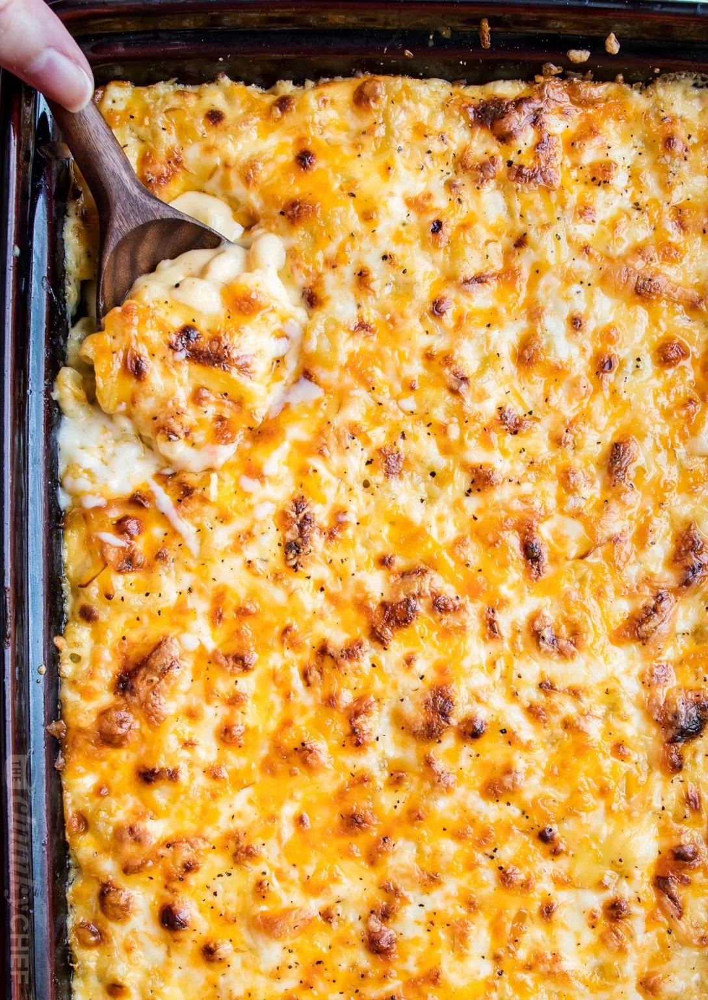

Baked Mac & Cheese
This baked mac & cheese recipe will guarantee you a spot at the cook out.
ingredient list
- 1 lb dried elbow pasta
- 1/2 cup unsalted butter
- 1/2 cup all purpose flour
- 1 1/2 cup all purpose whole milk
- 2 1/2 cups half and half
- 4 cups shredded medium cheddar cheese
- 2 cups shredded Gruyere cheese
- 1/2 Tbsp salt
- 1/2 tsp black pepper
- 1/4 tsp paprika
cooking procedure
- Preheeat oven to 325 degrees F and grease a 3 qt bking dish.
- Bring a large pot of salred water ro a boil. When boiling, ass dried pasta and cook for 1 minute less than the package directs foe al dente. Drain and drizzle with a little bit of olive oil to keep from sticking
- While water is coming to a boil, shred cheeses and ross together to mix, then divide into three piles. approximetely 3 cups for the sauce, 1 1/2 cups for the inner layer, and 1 1/2 cups for the topping.
- Melt butter in a large saucepan over med heat. sprinkle in flour and whisk to combine. Mixture will look like very wet sand. Cook for approximetly 1 minute, whisking often. Slowly pour in about 2 cups or so of the half and half, while whisking constantly, until smooth. Slowly pour in the remaining half and half and the whole milk, while whisking constantly until combined and smooth
- Continue to heat over med heat while whiking very often intil thickened to a very thick consistency.
- Remove from the heat and stir in spices and 1 1/2 cups of the cheeses, stiring to melt and combine. Stir in another 1 1/2 cups of cheese, and stir until completly melted and smooth.
- In a large mixing bowl combine drained pasta with cheese sauce, stiring to combine fully. Pour half of the pasta mixture into the prepared baking dish. Top wirh 1 1/2 cups of shredded cheeses, then top with the remaining pasta mixture.
- Sprinkle the top with the last 1 1/2 cups of the cheese and bake for 15 minutes, until cheese is bubbly and lightly golden brown.
